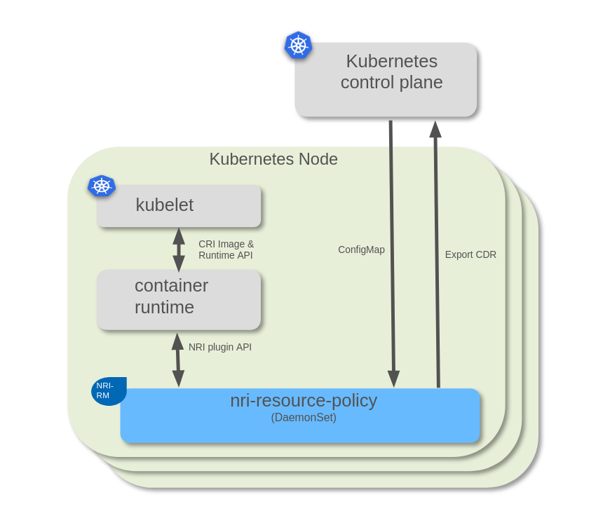

Architecture
Overview
NRI Resource Policy (later NRI-RP) plugin is an add-on for controlling container resource allocation on Kubernetes nodes.
NRI-RP plugs in to the NRI interface provided by container runtime implementation. The NRI-RP may alter the container resource allocation depending on configuration.
NRI-RP keeps track of the states of all containers running on a Kubernetes node. Whenever it receives a NRI request that results in changes to the resource allocation of any container (container creation, deletion, or resource assignment update request), NRI-RP runs the built-in policy algorithm. This policy makes a decision about how the assignment of resources should be updated. The policy can make changes to any container in the system, not just the one associated with the received NRI request. NRI-RP’s internal state tracking cache provides an abstraction for modifying containers and the policy uses this abstraction for recording its decisions.
Many aspects for NRI-RP are configurable. These include, for instance, configuration of the resource assignment algorithm for the policy.
Although NRI-RP can be configured using a static configuration file, the preferred way to configure all NRI-RP instances in a cluster is to use Kubernetes custom resources.

Components
Node Agent
The node agent is a component internal to NRI-RP itself. All interactions by NRI-RP with the Kubernetes Control Plane go through the node agent with the node agent performing any direct interactions on behalf of NRI-RP.
The agent interface implements the following functionality:
push updated external configuration data to NRI-RP
updating resource capacity of the node
getting, setting, or removing labels on the node
getting, setting, or removing annotations on the node
getting, setting, or removing taints on the node
The config interface is defined and has its gRPC server running in NRI-RP. The agent acts as a gRPC client for this interface. The low-level cluster interface is defined and has its gRPC server running in the agent, with the convenience layer defined in NRI-RP. NRI-RP acts as a gRPC client for the low-level plumbing interface.
Additionally, the stock node agent that comes with NRI-RP implements schemes for:
configuration management for all NRI-RP instances
management of dynamic adjustments to container resource assignments
Resource Manager
NRI-RP implements an event processing pipeline. In addition to NRI events, it processes a set of other events that are not directly related to or the result of NRI requests. These events are typically internally generated within NRI-RP.
The Resource Manager component of NRI-RP implements the basic control flow of the processing pipeline. It passes control to all the necessary sub-components of NRI-RP at the various phases of processing a request or an event. Additionally, it serializes the processing of these, making sure there is at most one request or event being processed at any point in time.
The high-level control flow of the request processing pipeline is as follows:
A. If the request does not need policying, let it bypass the processing pipeline; hand it off for logging, then relay it to the server and the corresponding response back to the client.
B. If the request needs to be intercepted for policying, do the following:
Lock the processing pipeline serialization lock.
Look up/create cache objects (pod/container) for the request.
If the request has no resource allocation consequences, do proxying (step 6).
Otherwise, invoke the policy layer for resource allocation:
Pass it on to the configured active policy, which will
Allocate resources for the container.
Update the assignments for the container in the cache.
Update any other containers affected by the allocation in the cache.
Invoke the controller layer for post-policy processing, which will:
Collect controllers with pending changes in their domain of control
for each invoke the post-policy processing function corresponding to the request.
Clear pending markers for the controllers.
Proxy the request:
Relay the request to the server.
Send update requests for any additional affected containers.
Update the cache if/as necessary based on the response.
Relay the response back to the client.
Release the processing pipeline serialization lock.
The high-level control flow of the event processing pipeline is one of the following, based on the event type:
For policy-specific events:
Engage the processing pipeline lock.
Call policy event handler.
Invoke the controller layer for post-policy processing (same as step 5 for requests).
Release the pipeline lock.
Cache
The cache is a shared internal storage location within NRI-RP. It tracks the runtime state of pods and containers known to NRI-RP, as well as the state of NRI-RP itself, including the active configuration and the state of the active policy. The cache is saved to permanent storage in the filesystem and is used to restore the runtime state of NRI-RP across restarts.
The cache provides functions for querying and updating the state of pods and containers. This is the mechanism used by the active policy to make resource assignment decisions. The policy simply updates the state of the affected containers in the cache according to the decisions.
The cache’s ability to associate and track changes to containers with resource domains is used to enforce policy decisions. The generic controller layer first queries which containers have pending changes, then invokes each controller for each container. The controllers use the querying functions provided by the cache to decide if anything in their resource/control domain needs to be changed and then act accordingly.
Access to the cache needs to be serialized. However, this serialization is not provided by the cache itself. Instead, it assumes callers to make sure proper protection is in place against concurrent read-write access. The request and event processing pipelines in the resource manager use a lock to serialize request and event processing and consequently access to the cache.
If a policy needs to do processing unsolicited by the resource manager, IOW processing other than handling the internal policy backend API calls from the resource manager, then it should inject a policy event into the resource managers event loop. This causes a callback from the resource manager to the policy’s event handler with the injected event as an argument and with the cache properly locked.
Generic Policy Layer
The generic policy layer defines the abstract interface the rest of NRI-RP uses to interact with policy implementations and takes care of the details of activating and dispatching calls through to the configured active policy.
Generic Resource Controller Layer
The generic resource controller layer defines the abstract interface the rest of NRI-RP uses to interact with resource controller implementations and takes care of the details of dispatching calls to the controller implementations for post-policy enforcement of decisions.
Metrics Collector
The metrics collector gathers a set of runtime metrics about system resources, containers running on the node, and policy-specific resource assignments and expose these as Prometheus metrics. This data can be externally evaluated and used to trigger rebalancing of resources if the NRI-RP implementation provides a (policy-specific) external interface for this.
Policy Implementations
Topology Aware
A topology-aware policy capable of handling multiple tiers/types of memory, typically a DRAM/PMEM combination configured in 2-layer memory mode.
Balloons
A balloons policy allows user to define fine grained control how the computer resources are distributed to workloads.
Template
The template policy can be used as a base for developing new policies. It provides hooks that the policy developer can fill to define fine grained control how the computer resources are distributed to workloads. Do not edit the template policy directly but copy it to new name and edit that.